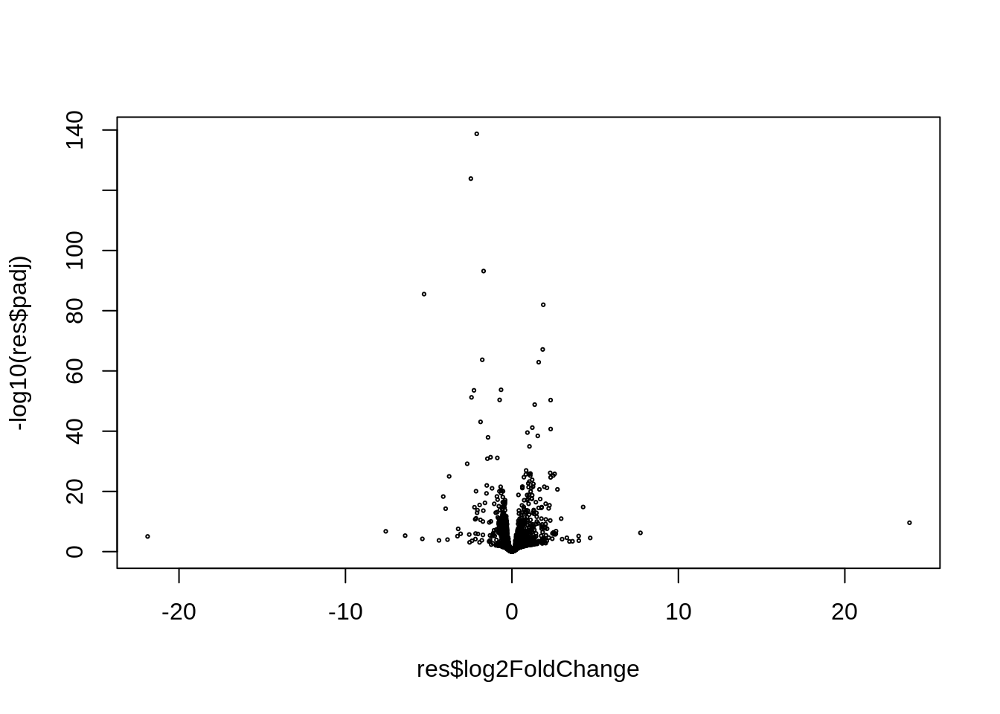

This outline contains a template of a typical DESeq2 workflow - as
discussed during the course.
For specific projects, the parts on data exploration, quality controls
and filtering are frequently more iterative and could require
tweaking.
library(DESeq2)
library(pheatmap)
library(tidyverse)
library(ashr)dfile <- "data/mpp/mpp_counts.tsv"
data <- read_tsv(dfile)## Rows: 24417 Columns: 13
## ── Column specification ────────────────────────────────────────────────────────
## Delimiter: "\t"
## chr (1): gene_id
## dbl (12): Young_HSC_1, Young_HSC_2, Young_MPP1_1, Young_MPP1_2, Young_MPP2_1...
##
## ℹ Use `spec()` to retrieve the full column specification for this data.
## ℹ Specify the column types or set `show_col_types = FALSE` to quiet this message.data <- data %>% column_to_rownames("gene_id")
mfile <- "data/mpp/mpp_meta.tsv"
metadata <- read_tsv(mfile)## Rows: 12 Columns: 3
## ── Column specification ────────────────────────────────────────────────────────
## Delimiter: "\t"
## chr (3): sample, celltype, condition
##
## ℹ Use `spec()` to retrieve the full column specification for this data.
## ℹ Specify the column types or set `show_col_types = FALSE` to quiet this message.metadata <- metadata %>% column_to_rownames("sample")
metadata$condition <- as.factor(metadata$condition)
metadata$celltype <- as.factor(metadata$celltype)
my_design <- ~ celltype + condition + celltype:condition
all(rownames(metadata) == colnames(data)) # sanity check## [1] TRUEdds <- DESeqDataSetFromMatrix(countData=data, colData=metadata, design= my_design)## converting counts to integer mode# data exploration and QC: not shown
# ...
# remove genes
keep_genes <- rowSums(counts(dds)) > 1
dds <- dds[keep_genes,]
# process/filter samples as required
# ...
# rerun Data Exploration and QC
rld <- rlog(dds)
plotPCA(rld, intgroup=c("condition", "celltype"))# keep transformed matrix A for later visualization
# scale rows (genes) for heatmap = transpose; (column) scale; transpose
A = assay(rld, normalized=TRUE) %>% t %>% scale %>% t dds <- DESeq(dds) ## estimating size factors## estimating dispersions## gene-wise dispersion estimates## mean-dispersion relationship## final dispersion estimates## fitting model and testing#Inspection
colData(dds) # sizefactors were added to metadata## DataFrame with 12 rows and 3 columns
## celltype condition sizeFactor
## <factor> <factor> <numeric>
## Young_HSC_1 HSC Young 0.874166
## Young_HSC_2 HSC Young 1.090789
## Young_MPP1_1 MPP1 Young 1.050110
## Young_MPP1_2 MPP1 Young 1.059677
## Young_MPP2_1 MPP2 Young 0.930771
## ... ... ... ...
## Aged_HSC_2 HSC Aged 1.07411
## Aged_MPP1_1 MPP1 Aged 0.98275
## Aged_MPP1_2 MPP1 Aged 1.10200
## Aged_MPP2_1 MPP2 Aged 1.00093
## Aged_MPP2_2 MPP2 Aged 1.04783plotDispEsts(dds, main="Dispersion plot") # dispersion# mcols(dds) # for the really curious: results of modelingVerify (base) levels and available coefficient (resultsNames).
Define model matrix and contrasts systematically
colData(dds)$condition## [1] Young Young Young Young Young Young Aged Aged Aged Aged Aged Aged
## Levels: Aged YoungcolData(dds)$celltype## [1] HSC HSC MPP1 MPP1 MPP2 MPP2 HSC HSC MPP1 MPP1 MPP2 MPP2
## Levels: HSC MPP1 MPP2resultsNames(dds)## [1] "Intercept" "celltype_MPP1_vs_HSC"
## [3] "celltype_MPP2_vs_HSC" "condition_Young_vs_Aged"
## [5] "celltypeMPP1.conditionYoung" "celltypeMPP2.conditionYoung"mod_mat <- model.matrix(my_design, metadata)
# define contrast systematically
Aged_MPP2 <- which(dds$condition=="Aged" & dds$celltype=="MPP2")
Young_MPP2 <- which(dds$condition=="Young" & dds$celltype=="MPP2")
YvA_MPP2=colMeans(mod_mat[Young_MPP2,]) - colMeans(mod_mat[Aged_MPP2,])
YvA_MPP2## (Intercept) celltypeMPP1
## 0 0
## celltypeMPP2 conditionYoung
## 0 1
## celltypeMPP1:conditionYoung celltypeMPP2:conditionYoung
## 0 1res <- lfcShrink(dds, contrast=YvA_MPP2, type = "ashr") ## using 'ashr' for LFC shrinkage. If used in published research, please cite:
## Stephens, M. (2016) False discovery rates: a new deal. Biostatistics, 18:2.
## https://doi.org/10.1093/biostatistics/kxw041# inspect results
res %>% head(5) # first few results## log2 fold change (MMSE): 0,0,0,+1,0,+1
## Wald test p-value: 0,0,0,+1,0,+1
## DataFrame with 5 rows and 5 columns
## baseMean log2FoldChange lfcSE pvalue padj
## <numeric> <numeric> <numeric> <numeric> <numeric>
## Plekhg2 133.8963 0.116174 0.185884 3.10302e-01 5.60298e-01
## Plekhg3 195.2731 0.134482 0.171969 2.46270e-01 4.89375e-01
## Plekhg1 120.6119 0.807279 0.548689 5.10819e-04 4.86566e-03
## Plekhg6 77.5309 0.335161 0.517385 1.56011e-02 7.23021e-02
## Plekhg5 168.7902 0.872573 0.276774 1.28764e-06 2.82492e-05summary(res) # summary for all genes##
## out of 16478 with nonzero total read count
## adjusted p-value < 0.1
## LFC > 0 (up) : 1482, 9%
## LFC < 0 (down) : 1818, 11%
## outliers [1] : 0, 0%
## low counts [2] : 2876, 17%
## (mean count < 4)
## [1] see 'cooksCutoff' argument of ?results
## [2] see 'independentFiltering' argument of ?resultsplotMA(res, ylim=c(-3,3)) # MA-plot from DESeq2plot(res$log2FoldChange, -log10(res$padj), cex=0.3) # very simple volcano
#my_volcano(res) # better?
# plot top-gene
plotCounts(dds, gene=which.min(res$padj), intgroup=c("condition","celltype")) # plot heatmap for top 15 genes
ntop <- 15
sorted_res <- res %>% data.frame() %>% arrange(padj) # sort results by padj
top_genes <- sorted_res %>% head(ntop) %>% row.names() # top gene names
col_sel=c(Young_MPP2, Aged_MPP2) # select only samples in contrast
pheatmap(A[top_genes,col_sel], main="Top DE Genes (rlog)", annotation=metadata)# write sorted results to file (add rowname as column)
fn="results.tsv" # might need a more informative filename
write_tsv(sorted_res %>% rownames_to_column("Gene"), file=fn) sessionInfo()## R version 4.1.3 (2022-03-10)
## Platform: x86_64-conda-linux-gnu (64-bit)
## Running under: Ubuntu 22.04.2 LTS
##
## Matrix products: default
## BLAS/LAPACK: /home/runner/micromamba-root/envs/Rdeseq2/lib/libopenblasp-r0.3.21.so
##
## locale:
## [1] LC_CTYPE=C.UTF-8 LC_NUMERIC=C LC_TIME=C.UTF-8
## [4] LC_COLLATE=C.UTF-8 LC_MONETARY=C.UTF-8 LC_MESSAGES=C.UTF-8
## [7] LC_PAPER=C.UTF-8 LC_NAME=C LC_ADDRESS=C
## [10] LC_TELEPHONE=C LC_MEASUREMENT=C.UTF-8 LC_IDENTIFICATION=C
##
## attached base packages:
## [1] stats4 stats graphics grDevices utils datasets methods
## [8] base
##
## other attached packages:
## [1] BiocManager_1.30.20 ashr_2.2-54
## [3] UpSetR_1.4.0 EnsDb.Hsapiens.v75_2.99.0
## [5] ensembldb_2.18.1 AnnotationFilter_1.18.0
## [7] GenomicFeatures_1.46.1 AnnotationDbi_1.56.2
## [9] ggrepel_0.9.3 pheatmap_1.0.12
## [11] lubridate_1.9.2 forcats_1.0.0
## [13] stringr_1.5.0 dplyr_1.1.1
## [15] purrr_1.0.1 readr_2.1.4
## [17] tidyr_1.3.0 tibble_3.2.1
## [19] ggplot2_3.4.2 tidyverse_2.0.0
## [21] DESeq2_1.34.0 SummarizedExperiment_1.24.0
## [23] Biobase_2.54.0 MatrixGenerics_1.6.0
## [25] matrixStats_0.63.0 GenomicRanges_1.46.1
## [27] GenomeInfoDb_1.30.1 IRanges_2.28.0
## [29] S4Vectors_0.32.4 BiocGenerics_0.40.0
##
## loaded via a namespace (and not attached):
## [1] colorspace_2.1-0 rjson_0.2.21 XVector_0.34.0
## [4] farver_2.1.1 bit64_4.0.5 fansi_1.0.4
## [7] xml2_1.3.3 splines_4.1.3 cachem_1.0.7
## [10] geneplotter_1.72.0 knitr_1.42 jsonlite_1.8.4
## [13] Rsamtools_2.10.0 annotate_1.72.0 dbplyr_2.3.2
## [16] png_0.1-8 compiler_4.1.3 httr_1.4.5
## [19] Matrix_1.5-4 fastmap_1.1.1 lazyeval_0.2.2
## [22] cli_3.6.1 htmltools_0.5.5 prettyunits_1.1.1
## [25] tools_4.1.3 gtable_0.3.3 glue_1.6.2
## [28] GenomeInfoDbData_1.2.7 rappdirs_0.3.3 Rcpp_1.0.10
## [31] jquerylib_0.1.4 vctrs_0.6.1 Biostrings_2.62.0
## [34] rtracklayer_1.54.0 xfun_0.38 irlba_2.3.5.1
## [37] timechange_0.2.0 lifecycle_1.0.3 restfulr_0.0.15
## [40] XML_3.99-0.14 zlibbioc_1.40.0 scales_1.2.1
## [43] vroom_1.6.1 hms_1.1.3 ProtGenerics_1.26.0
## [46] parallel_4.1.3 RColorBrewer_1.1-3 yaml_2.3.7
## [49] curl_4.3.3 gridExtra_2.3 memoise_2.0.1
## [52] sass_0.4.5 biomaRt_2.50.0 SQUAREM_2021.1
## [55] stringi_1.7.12 RSQLite_2.3.1 highr_0.10
## [58] genefilter_1.76.0 BiocIO_1.4.0 filelock_1.0.2
## [61] BiocParallel_1.28.3 truncnorm_1.0-9 rlang_1.1.0
## [64] pkgconfig_2.0.3 bitops_1.0-7 invgamma_1.1
## [67] evaluate_0.20 lattice_0.21-8 fontawesome_0.5.0
## [70] GenomicAlignments_1.30.0 labeling_0.4.2 bit_4.0.5
## [73] tidyselect_1.2.0 plyr_1.8.8 magrittr_2.0.3
## [76] R6_2.5.1 generics_0.1.3 DelayedArray_0.20.0
## [79] DBI_1.1.3 pillar_1.9.0 withr_2.5.0
## [82] mixsqp_0.3-48 survival_3.5-5 KEGGREST_1.34.0
## [85] RCurl_1.98-1.12 crayon_1.5.2 KernSmooth_2.23-20
## [88] utf8_1.2.3 BiocFileCache_2.2.0 tzdb_0.3.0
## [91] rmarkdown_2.21 progress_1.2.2 locfit_1.5-9.7
## [94] grid_4.1.3 blob_1.2.4 digest_0.6.31
## [97] xtable_1.8-4 munsell_0.5.0 bslib_0.4.2